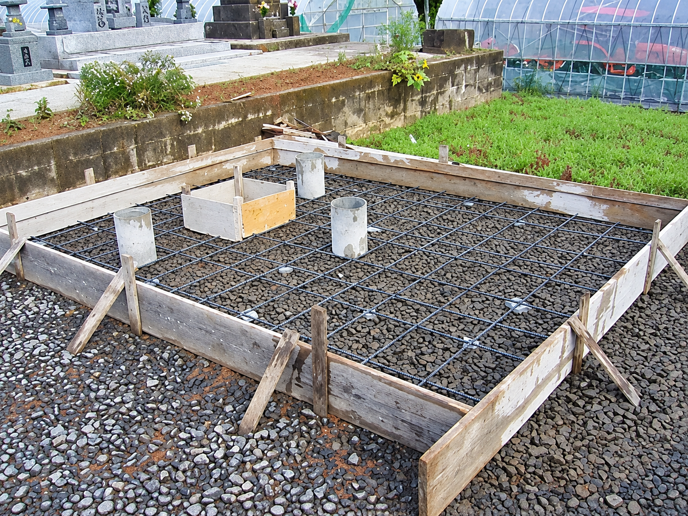

彫刻位置
○○家や、家紋などを彫る位置というのに決まりはありません。
竿石にお題目を彫るのは全国的に統一されているようですが、名前や家紋等は墓石デザインによって、彫刻位置が変わる事も少なくありません。また、洋型やデザイン墓石が増えた事で、家紋自体を「彫らない」という方も多くなってきました。
KNOWLEDGE
WHAT IS A GOOD GRAVE?
お墓を建てる理由は皆さんそれぞれだと思います。
その全員が「良いお墓を建てたいと思っているのではないでしょうか。」
では良いお墓とは？
値段が高いお墓が良いお墓なのでしょうか。
珍しい石を使い、作ったお墓が良いのでしょうか。
周りよりも目立つお墓を作る事が良いのでしょうか。
お墓を作っていく上で、デザイン、石質、金額・・・など、何処に価値を求めるかは人それぞれです。自分が求めていた以上の価値を得る事が出来るよう仕上がったお墓が「良いお墓」だと思います。
LETTERS & CRESTS
墓石に使う文字や色はどう選びますか。
文字も家紋も、決まりより「読めること」と「その家らしさ」を大切にして選べます。
お墓の一番上にある「竿石」と呼ばれる部分には、宗派に関する文字か家名のどちらかが彫ってある事が多いと思います。
それ以外は彫ってはいけない・・？ そんな事はありません。
彫刻文字は自由に決める事ができます。好きな言葉でも良いですし、故人をイメージするような言葉でも構いません。
当店で人気がある文字は・・ 「慈」 「心」 「悠」 「想」 「佛心」です。
○○家や、家紋などを彫る位置というのに決まりはありません。
竿石にお題目を彫るのは全国的に統一されているようですが、名前や家紋等は墓石デザインによって、彫刻位置が変わる事も少なくありません。また、洋型やデザイン墓石が増えた事で、家紋自体を「彫らない」という方も多くなってきました。
お墓をよく見ると、お題目や家紋が黒色や白色で塗られている事があります。
また、色を入れていなく、石に字を彫ったままの状態になっているお墓もあります。
お墓に興味を持って、よく見ないと分からない部分かもしれませんが・・・。
この彫刻した部分に入れる色にも決まりはありません。色を入れる理由は「文字を見やすくする為」です。
ですので、白系の石材には黒色を、黒っぽい石材のお墓には白をいれます。石自体の色を大切にしたい方は着色を嫌がります。
見やすくする為に黒色を入れることがあります。
見やすくする為に白をいれることがあります。
BEFORE BUILDING
お墓を建てる時期に決まりはありますか。
建てる時期に決まりはありません。希望の時期から逆算して、墓地の条件と工事の段取りを早めに確かめます。
お墓を建てる時期についても、決まりはありません。
ただ、一年の内で一番お墓に意識が向く「お盆」に合わせて建てられる方が多いです。
墓石工事は６月・７月が特に込むので、お盆までの完成を希望される方は早目に石材店へ相談すると良いと思います。

墓地は、一般の土地を購入するのとは異なり、使用許可や使用権に基づいて利用する形が一般的です。
永代使用料や管理費の税務上の扱いは、料金の内容や管理主体によって異なる場合があります。
墓石代や工事費、材料費などには通常の消費税がかかります。
永代使用料や管理費などの扱いは、墓地・霊園や契約内容によって異なる場合があります。詳しくは各管理者や自治体等へご確認ください。
AFTERCARE
お墓掃除で気をつけることはありますか。
まずは、お墓をタオルで拭く前に全体を軽くぬらす事。これでお墓についた汚れを落としやすくします。
その上で、タオル等で汚れをふき取って下さい。お墓に水分が残らないようにするのがポイントです。
近年建てられたお墓であれば、墓石洗剤等を使う必要もありません。
次に、花立ての水は必ず交換するか、お花が無い場合は水を捨てておいて下さい。
長い間、花立ての水をそのままにしておくと、水が腐り、異臭を放つと共に、虫が湧いてきます。
お供え物も、お参りが終わったら持ち帰るのが望ましいです。
そのままにしておくと、鳥や動物が荒らしてしまい、お墓が汚れます。
最後に、石材にとって「油分」 「糖分」 「塩分」はとてもダメージを与えます。
ですので、お酒やジュースなどをお供えする際は、蓋を開けずにお参りが終わるとその他の御供え物と一緒に持ち帰るのが良いと思います。